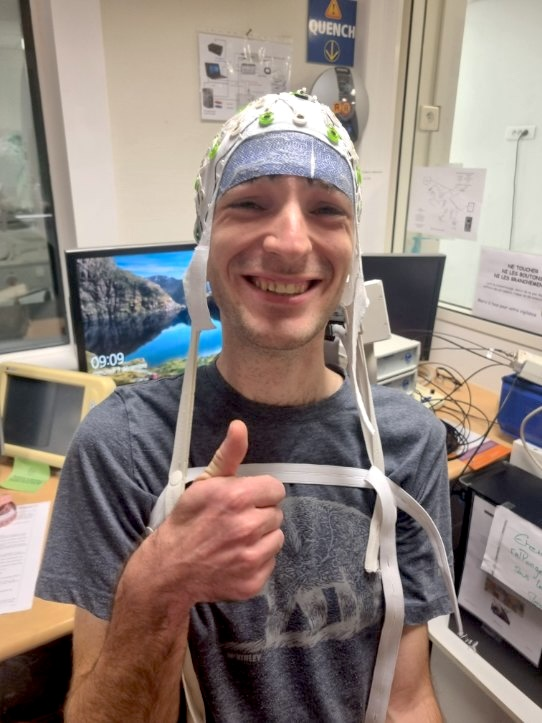

I am a PhD student within the Empenn and MALT research teams, funded by Siemens Healthineers. My PhD project, Anomaly detection and segmentation for the characterization of post-stroke recovery, is conducted under the supervision of Dr. Elise Bannier, Pr. Elisa Fromont, Pr. Francesca Galassi and Dr. Stéphanie Leplaideur.
Research on detection of central nervous system lesions:
🤖 Fully supervised segmentation of multiple sclerosis lesions in the spinal cord using CNN & Transformers architectures.
🖼️ Unsupervised detection of brain stroke lesions using deep generative architectures.
🔧 Aircraft mechanic (Part-66L) and glider pilot
📝 Naturally curious, with a passion for exploring electronics, meteorology, chemistry, physics and AI.
